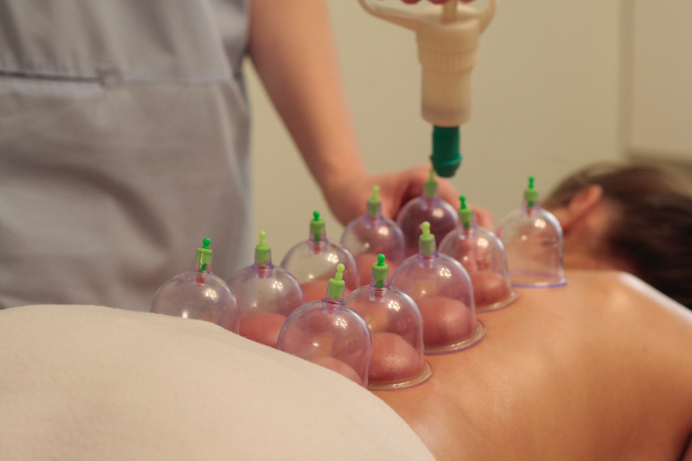

Services We Offer
We proffer prophetic and natural herbal solutions to various health challenge by carrying out proper diagnosis to get the nature of illness as a guide to prescribing adequate medication. Our health solutions are humanly trusted and divinely confirmed to cure diseases totally; thereby, making the body system optimally fit for a healthy living. Our services include the following:
Diagnosis
We run tests such as blood sugar, blood pressure and others for which we have facilities. However, we refer patient to trusted laboratories to run high-profile tests according to their health complaints. Afterward, we analyze results of tests and take appropriate steps.
Cupping (Hijamah)
It is one of the prophetic medications that we use in treating different diseases as divinely recommended by the Almighty Creator of nature.
Training
We organize training programmes both online and offline to impart knowledge of natural herbs and prophetic medicine to interested medical practitioners and other interested people and institutions.
Treatment
We treat patients with natural herbs and prophetic medicines as opposed to chemical-based drugs that sometimes have side effects on the body system after treatment. We produce an array of herbal and prophetic drugs for prescription to patients after ascertaining the nature of their health challenges.
Consultancy
We offer medical consultancy to certain clients who choose to explore efficacy of natural and prophetic medicine. Our consultancy services cover areas such as healthy lifestyle, dietetic guide, medication etc. Individuals and corporate organizations comprise our consulting clients.

Nutritional Therapy
Medication is not all about taking doses of drugs! Certain natural foods by virtue of their intrinsic nutrients are powerful medicines. Thus, as a certified nutritionist, we also treat health challenges by recommending / prescribing some natural foods as both meal and medicine to patients.